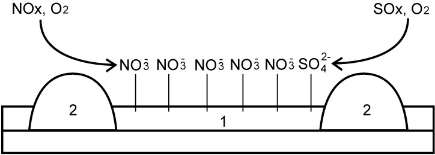
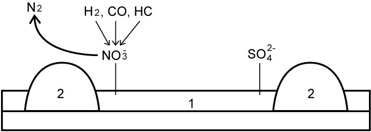
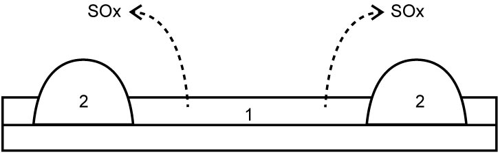

1A
| NOx Trapping and Reduction Control System Description |
This NOx trapping and reduction control system is composed of NOx Storage Catalyst (NSC), DPF®, A/F sensor-1 and 2, and EGT sensor-1, 2 and 3. NSC is located at upstream of DPF® and the NSC and DPF® are incorporated in a sealed case.
A/F sensor-1 is located upstream of the NSC and A/F sensor-2 is located downstream of DPF®. EGT sensor-1 is located upstream of the NSC, EGT sensor-2 is located downstream of the NSC (upstream of DPF®) and EGT sensor-3 is located downstream of DPF® respectively.
The system functions for NOx release and reduction (DENOx), SOx release and reduction (DESOx) and soot removal by DPF® regeneration (DESOOT) monitoring signals from the above sensors for optimum activation of the NSC and DPF®.
The system treats NOx and SOx emitted from the engine with the NSC according to the following process.
NOx is trapped in storage compound (1) in the NSC while the engine is operated under lean A/F mixture. During that time, a small amount of SOx is also trapped.
Normal condition in NSC (Exhaust gas: Lean A/F)

 "Expand image")
| 2. | Precious metal |
For reduction of NOx in the NSC, DENOx is activated by an effect of post-injection as a rich A/F condition.
ECM estimates accumulation of the NOx in storage compound (1) in the NSC based on the vehicle driving history, and when the estimated accumulation exceeds 80% of the NSC capacity and other executive conditions are satisfied, DENOx is activated automatically and the trapped NOx in the NSC is reduced.
DENOx (Exhaust gas: Rich A/F)

 "Expand image")
| 2. | Precious metal |
However, trapped SOx remains in the NSC during DENOx and increases its volume while DENOx is repeated according to increase of odometer readings and the accumulated SOx may cause poisoning deterioration of catalyst, so called sulfation, affected by sulfur in the fuel and progress of the sulfation decreases trapping capacity of the NSC for NOx.
Accumulated SOx in NSC (Sulfation: Developed)

 "Expand image")
| 1. | Storage compound | 2. | Precious metal |
Therefore, activation of DESOx is required before the sulfation becomes worse.
ECM estimates accumulation of the SOx in storage compound (1) in the NSC based on the vehicle driving history, and when the estimated accumulation exceeds 80% of the NSC capacity and other executive conditions are satisfied, DESOx is activated automatically and the trapped SOx in the NSC is reduced.
For activation of the DESOx, higher temperature combustion gas with rich A/F mixture compared with the DENOx is blown over the catalyst.
DESOx (Exhaust gas: Rich A/F and high temperature)

 "Expand image")
| 2. | Precious metal |